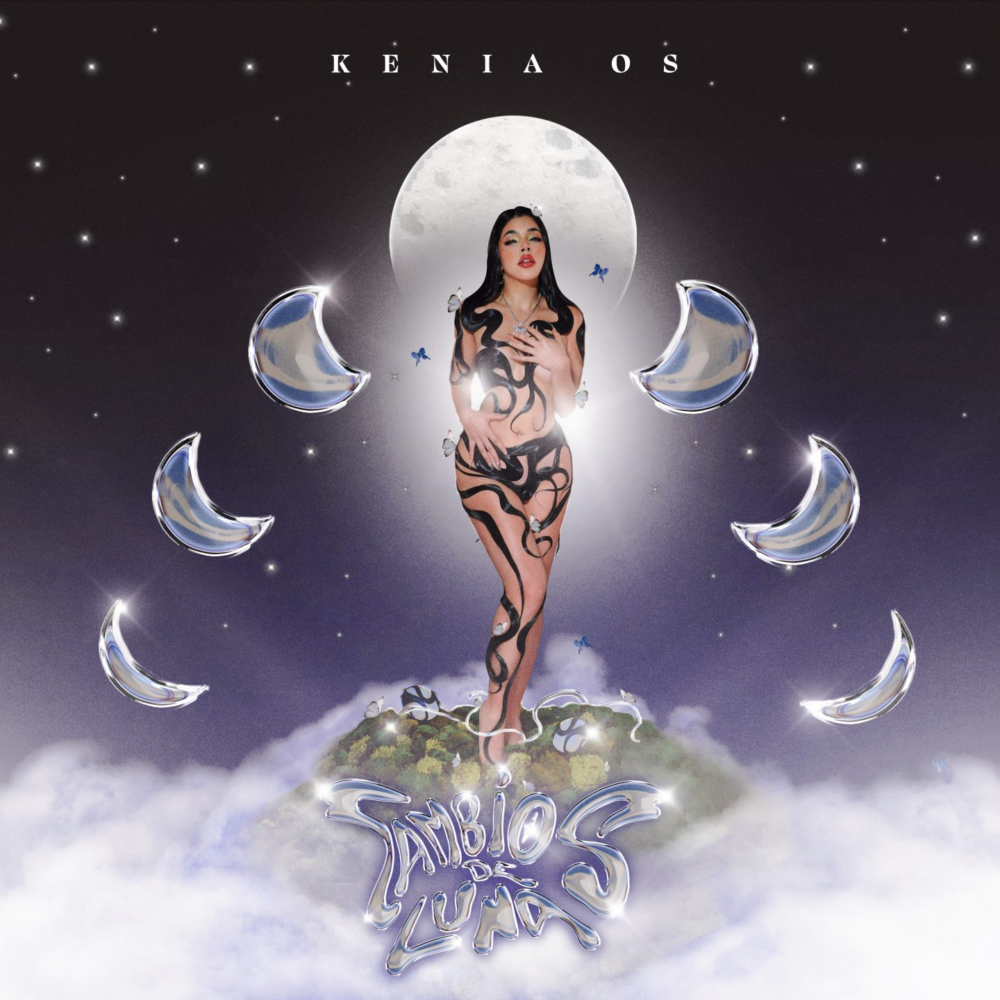
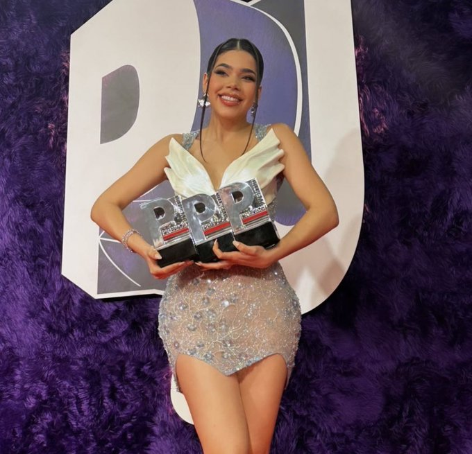
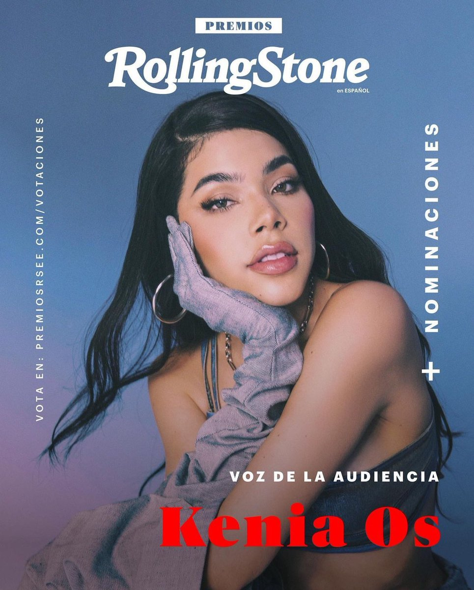
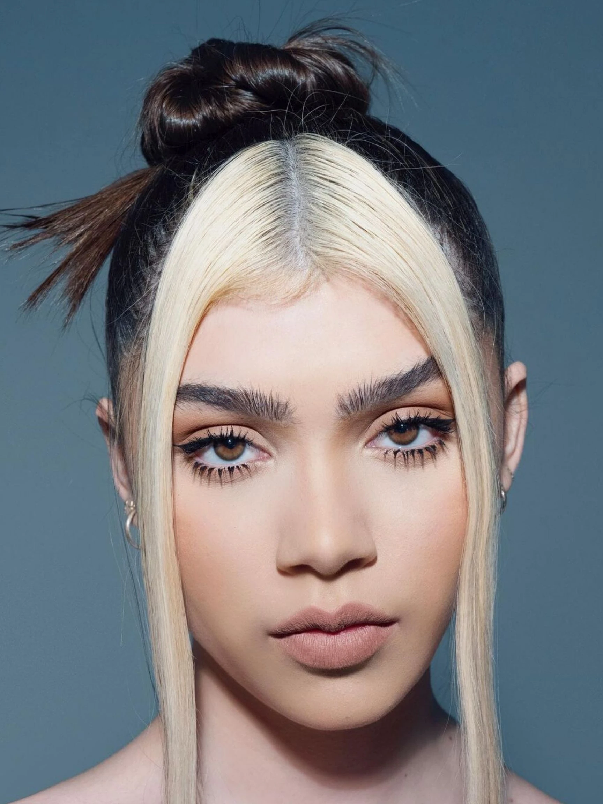
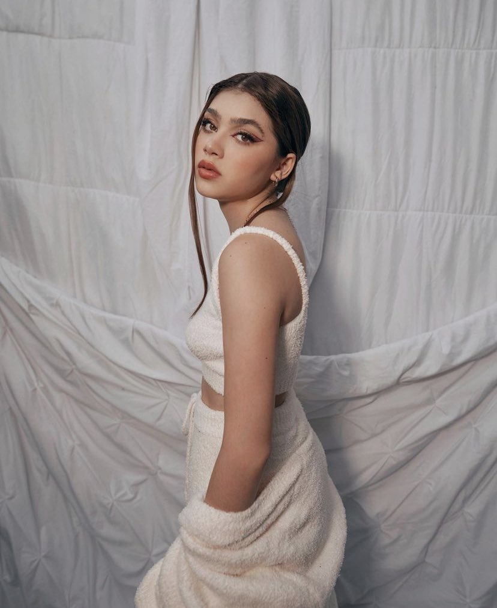
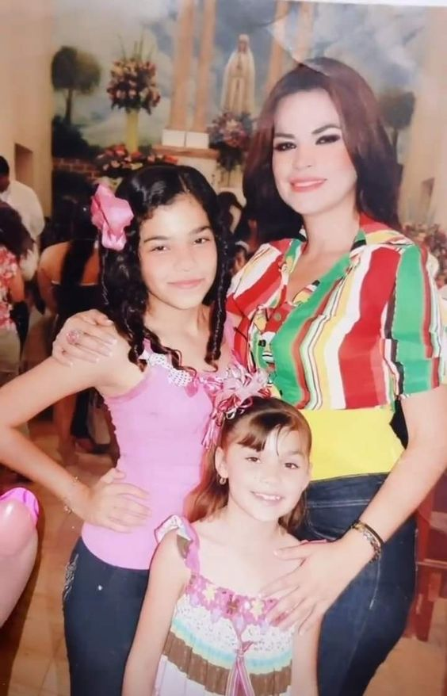
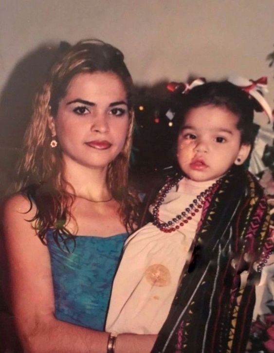

Kenia Os
Un poco de Kenia Os
Kenia Guadalupe Flores Osuna, mejor conocida en el medio artístico como Kenia Os, nacida en Mazatlán, Sinaloa, el 15 de julio de 1999, es una cantante mexicana, la cual tuvo sus comienzos en el mundo de YouTube, haciendo videoblogs, tags y retos. Después trascendió al medio artístico como cantante en el año de 2018, con el sencillo "Por Siempre", el cual tuvo buen recibimiento del público en general. Actualmente, cuenta con una canción con casi 200 millones de reproducciones en Spotify y otras que superan los 50 M. Kenia ha ganado varios premios importantes en la industria artística, gracias al buen trabajo que hace y lo bien que ha sabiado manejar su carrrera musical.... Es una cantante muy querida por su fandom (Keninis), fandom que es demasiado grande y con el cual Kenia está demasiado agradecida, ya que ha recalcado en varias ocasiones que gracias a ellos y al apoyo incondicional que le dan, ella ha logrado todo lo que tiene hasta el día de hoy y sin ellos no estaría pasando tantas cosas bellas en su vida. Por último, cuenta con colaboraciones en la industria musical superimportantes, con artistas como: Ha*Ash, Rels B, Thalia y muchos artistas más, esto es un pequeño resumen acerca de la Cantante mexicana y de su vida......
Discografía
La cantante Kenia Os tiene una amplia discografía, contando asi con 48 canciones en total y 2 Albums lanzados en 2022, los cuales llevan por nombre "Cambios de Luna" lanzado el 24 de marzo del 2022 el cual cuenta con 12 canciones (Cambios, Se Fue la Luz, La Carta, Gracias a Dios, Soledad, A la Mitad, Llévatelo, La Noche, Los Santos, Morir de Amor y Culpame a Mi). El segundo album lleva por nombre "K-23", lanzado el 26 de octubre del 2022 y cuenta con 11 canciones en total (Mía Mía, Año Sabático, Good Boy, Botellita, Buscándonos, Toy Toy, Placebo, La invitación, Flores, Malas Decisiones y Si por MI Fuera). Además que cuenta con un Ep, titulado "CPME.Vol1 (Canciones pa' mi ex volumen 1)", lanzado el 16 de octubre de 2020, cuenta con 6 canciones (Te Odio, Tu Peor Pesadilla, ¿Qué Pasa?, Tenia que Llegar, Fue Lindo y Tsunami). Actualmente, Kenia se encuentra trabajando en un nuevo pryecto del cual no se sabe mucho, pero ella comenta que le está gustando mucho lo que esta haceindo y que espera que sus fans reciban de buena manera el proyecto en el cual esta dejando su amor y corazón. Kenia enfoca su música en el género "Pop", aunque ah trabajado con varios géneros más, como el Reggaeton, Regional Mexicano y Urbano.
Redes Sociales
En cuestion de las redes sociales de Kenia, ella cuenta con perfiles en Facebook como "La Kenini" (2.8 mill. de sesuidores), Spotify como "Kenia Os" (6 mill. de oyentes mensuales), Instagram como "Kenia Os" (16.1 mill. de seguidores), Tik Tok como "KeniaOs" (19.9 mill. de seguidores) y en Twitter como "Kenia Os" (6.3 mill. de seguidores). En todas ellas es una persona activa, más en Instagram, ya que ahí nos comparte un poco de su vida cotidiana, y en tik tok, que de vez en cuando sube videos interpretando canciones o haciendo bailes que estan en tendencias. También tiene un canal de YouTube, ahí aparece como "Kenia Os" (7.31 mill. de seguidores), aunque ya no sube videos y la mayoría de los que tenia los elimino (la razón es un cuanto desconocida) y su canal de musica en YouTube dodne aparece como "KOS" (5.2 mill. de seguidores).


Nominaciones y premios de la cantante
En cuanto a las nominaciones de la cantante a premios importantes este año, se encuentra su primera nominación a los Grammys Latinos (Latin Grammys) en la categoría a "Mejor video musical Versión Largo" con su proyecto 'Universo K-23', cuneta tambien con una nominación en los premios MTVemas, en la categoría a "Mejor Artista Norte" y la Ultima de este año en los premios Rolling Stone, en la categoría "Voz de la Audiencia". En cuanto a los premios que ha ganado son varios, se encunetran entre ellos el premio de "Artista Miaw", "Himno viral" (con la cancion Malas decisiónes), "Icono Miaw", etc., estos son de los premios de MTVMIaw. De los premios Juventud ganó en las categorías de "La nueva generación femenina", "Mejor fandom", entre otros premios más que ha ganado a lo largo de su carrrera....
 Familia de la cantante
Eloisa Os
Eloisa Yamileth Flores Osuna, nacida en Mazatlán, Sinaloa, el 8 de octubre de 2004, actualmente tiene 19 años ,mejor conodida como "Eloisa Os" en el mundo de el internet, es hermana menor de la cantante, la cual también tuvo su comienzo en el mundo de youtube haciendo videoblogs, tags y retos, después sacó su primer sencillo titulado "Disimular", con este queriendo incursionar en el mundo de la música como cantante, al igual que su hermana pero Eloisa se dio cuenta que eso no era lo que le apasionaba a ella, entonces decidio dejarlo. Al poco tiempo se alejo de el mundo de youtube para enfocarse en ella y en lo que le apasiona, el modelaje, actualmente cuenta con 2.6 Mill de sguidores en IG y 2.6 Mill en TikTok, siendo estas sus unicas redes sociales donde sube contenido de su vida.
 La Mamá Os
Mireya Osuna mejor conocida como "La Mamá Os", es la madre de la cantante Kenia Os y de Eloisa Os, de ella no se tiene gran información, solo que es originaria de Mazatlán, Sinaloa, y que actualmente se encuentra en una relación sentimental estable
 